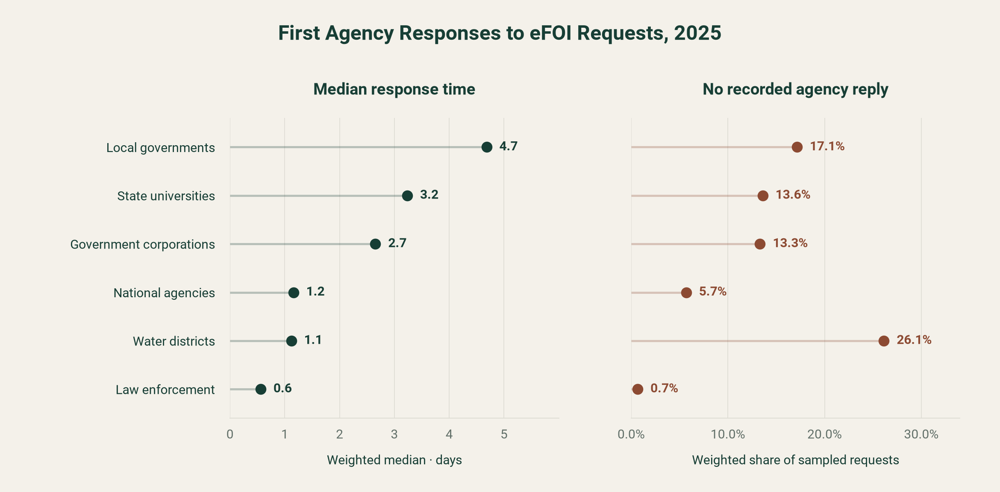
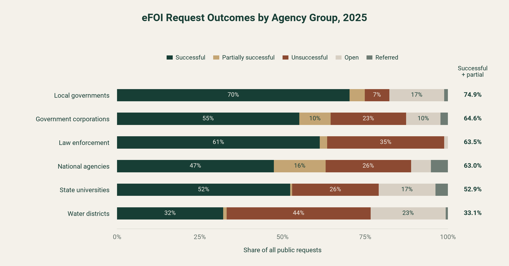
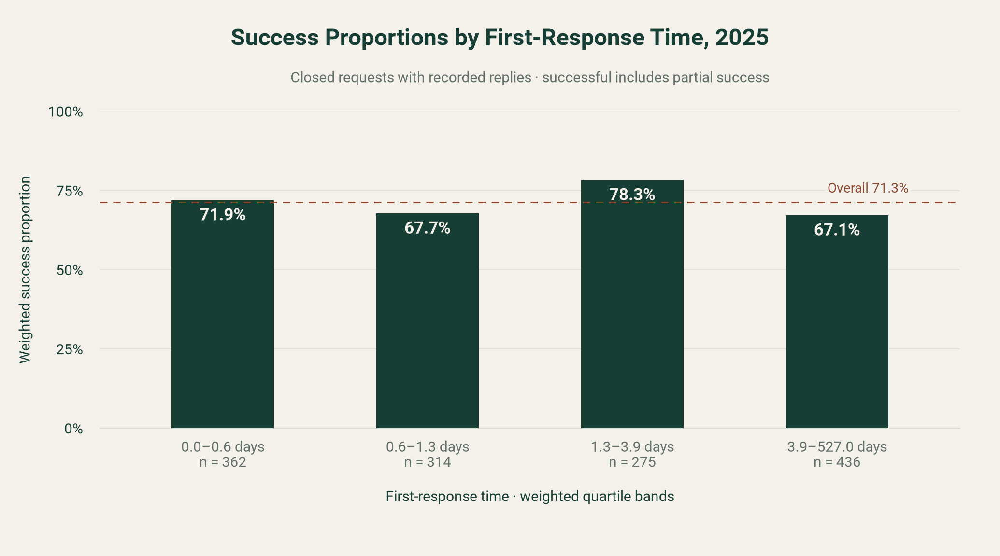

Response time
How long does each agency group take to post its first response to an eFOI request?
H₀ First-response time is the same across agency groups.
H₁ At least one agency group has a different first-response time.
Pilipinas in a Nutshell · 2026
Comparing eFOI response times
and outcomes in 2025.
An inquiry into how government agencies respond to requests for public information—and whether a faster first reply goes with a successful outcome.
Explore the research01 / The context
The Philippines has no freedom of information law passed by Congress. Public access to government records rests on Executive Order No. 2, s. 2016, signed on July 23, 2016. It covers offices under the Executive Branch, including national agencies, government-owned or -controlled corporations and state universities and colleges. Local government units are only "encouraged to observe and be guided by" the order.
The order sets a clear service standard. An agency must respond "as soon as practicable but not exceeding fifteen (15) working days" from receipt, extendable to at most twenty working days when records need extensive search. A requester whose request is denied, or not answered in time, may appeal within fifteen working days.
Requests are filed and answered in public on the eFOI portal, which listed 271,232 requests across 739 agencies when we collected our data. Each request shows when it was filed, when the agency replied and how it ended. That makes it possible to measure responsiveness from the record itself, rather than from surveys or perceptions. Because coverage differs by type of office, and LGUs are not bound by the order, we compare the portal's official agency groups.
This work relates to SDG 16: effective, accountable institutions (target 16.6) and public access to information (target 16.10).
Build a documented, request-level dataset of 2025 eFOI requests and use it to measure how quickly each agency group first responds, how often requests succeed, and whether faster responses go with success. The results describe differences in first-response times and observed outcomes across agency groups. First-message calendar times do not directly measure compliance with the order’s working-day deadline.
02 / The research
Research hypotheses.
View the analysis ↓
Response time
H₀ First-response time is the same across agency groups.
H₁ At least one agency group has a different first-response time.
Request outcomes
H₀ The success rate is the same across agency groups.
H₁ The success rate differs across agency groups.
Speed & success
H₀ First-response time is not related to the outcome of a closed request.
H₁ Closed requests with a faster first response are more likely to end successfully.
03 / The data repository
All data come from the public eFOI request browser. We scraped every listing page holding 2025 filings, giving the full population of 14,668 public requests filed in 2025 with agency, filing time, purpose and status. We then drew a stratified random sample and scraped each sampled request's detail page for its status timeline and the timestamps of every agency reply.
Each agency is assigned its official group from the agency directory: NGA, GOCC, SUC, water district, LGU and LEA. Coverage note: the portal lists no public requests filed between March 20 and June 18, 2025, so Q2 contains only late-June filings.
| Field | What it records | Handling |
|---|---|---|
| Tracking number | Unique request identifier | Used to remove duplicates |
| Agency & group | Receiving agency and its official group | Joined from the agency directory |
| Filing time | Date and time the request was filed | Minute precision; quarter derived |
| First agency reply | Earliest message posted by the agency | No reply is left blank, never zero |
| First-response days | Days from filing to first agency reply | Fractional days |
| Status & outcome | Portal status on the collection date | Mapped to successful / partial / unsuccessful / referred / open |
| Sampling weight | Stratum population ÷ stratum sample | For population-level estimates |
04 / Our process
Reproducible scripts are in
the GitHub repository.
The portal sits behind Cloudflare, which rejects plain HTTP scrapers (HTTP 403). Our scraper uses Playwright to control an ordinary Google Chrome window, which loads pages like a normal visitor. The site's robots.txt allows all crawlers and its terms permit non-commercial research. Pages are loaded one at a time, 1–2 seconds apart.
The request browser lists requests newest first. A binary search found the listing pages holding 2025 filings (pages 1,024–2,002 on collection day). We scraped all 979 pages, removed duplicates by tracking number, and kept filings from January 1 to December 31, 2025: 14,668 requests.
Strata are agency group × filing quarter. Each group gets up to 300 requests, split across quarters in proportion to its filings; LGUs (175) and water districts (287) are taken in full. Seed 132 makes the draw reproducible, and each row carries a sampling weight. We then scraped each sampled request's detail page for reply timestamps.
Portal dates such as "Sept. 27, 2025, 11:03 p.m." are converted to standard timestamps. Duplicate tracking numbers are removed (17), filings outside 2025 are dropped, every agency is matched to its directory group, and each status is mapped to an outcome category. First-response time is the gap between filing and the first agency message, in fractional days; requests with no reply stay blank rather than zero. Replies dated before filing are flagged (none found). Sampled pages the portal no longer serves (22) are excluded, not replaced. Team members checked 100 random rows against the live pages, and all 100 matched. We store no requester names, contact details, message text or attachments.
Reading the evidence
We measure time to the first agency reply, rather than time to complete fulfillment. A quick acknowledgment does not itself establish a successful outcome.
05 / Exploratory analysis
Public requests filed in 2025.
Status observed September 29, 2026.
Response-time analysis uses 1,641 sampled request timelines. Outcome proportions use all 14,668 requests in the observed listing frame. A first reply may be an acknowledgment; it does not necessarily provide the requested information.
The sample gives smaller agency groups a larger share than they have in the full frame. Weighted estimates adjust for this: each request receives a weight equal to its agency-group × quarter frame count divided by the number collected in that stratum. Unweighted displays count each sampled request equally.
Successful outcomes include successful and partially successful requests. Unsuccessful outcomes are statuses DENIED or CLOSED. Open and referred requests remain separate categories. “No recorded agency reply” means no agency message was found in the public conversation; a request can still have a CLOSED status without such a message.
Hypothesis comparisons use α = 0.05. Shapiro–Wilk tests reject normality in all six agency groups, both for raw response times and after a log transformation. The response-time comparisons therefore use rank-based tests. Full checks and calculations are in the analysis notebooks.
Response time

Hypothesis comparison. Response-time ranks differ across agency groups: Kruskal–Wallis H = 218.71, p = 2.80 × 10−45, ε² = 0.152. Reject H₀. Eleven of the fifteen pairwise comparisons remain significant after Bonferroni adjustment.
The omnibus test and pairwise tests use unweighted sampled requests with recorded replies. The plotted medians are weighted; the tests compare distributions rather than medians alone.

Request outcomes

Hypothesis comparison. The success-versus-other-outcomes chi-square comparison gives χ² = 134.77, df = 5, p = 2.32 × 10−27. Reject H₀ under the test model. Cramér’s V = 0.096 indicates a weak overall association.
These are all requests in the observed frame, so the proportions directly describe that frame. The p-value depends on a model extending beyond these observed records. Restricting the comparison to closed requests also gives a small effect size (V = 0.098).
Speed & success

Hypothesis comparison. The weighted Mann–Whitney permutation comparison gives a two-sided p = 0.989. Fail to reject H₀: this comparison does not provide evidence that successful requests receive faster first replies. This does not establish that no relationship exists.
The test uses the underlying response-time ranks, rather than the four chart bands. The result describes closed requests with recorded replies; it does not establish causation.
The weighted quartile boundaries are approximately 0.56, 1.26 and 3.93 days. They divide the estimated distribution of closed requests with recorded replies into four roughly equal-weight groups. These are data-derived boundaries, not service deadlines.
The pooled permutation test shuffles outcome labels across the sampled requests. Its interpretation depends on that exchangeability assumption; it does not explicitly account for within-agency clustering or the full stratified sampling design. We report it as an exploratory comparison.
A sensitivity check ranks the 22 closed requests without a recorded reply after all observed reply times. The pooled p-value is 0.914. A water-district subgroup result from that check is exploratory and unadjusted for multiple comparisons.
06 / The nutshell

07 / Next milestones
Dataset collected, documented and shared in the Google Sheet.
Figures and exploratory hypothesis comparisons are presented above, with calculations in the analysis notebooks.
Develop the discussion and recommendations, and assess whether a predictive model would support the research questions.
08 / About us
CS 132 · AY 2026–2027, Semester 1
Section WFX · Group 1
Data collected September 29, 2026.